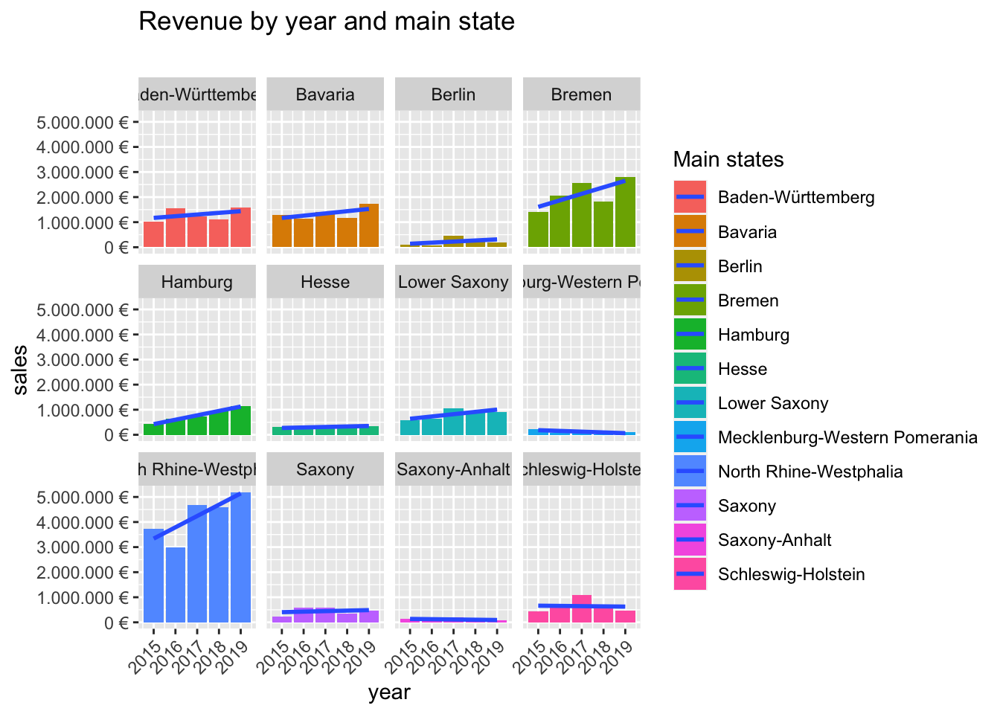

# 1.0 Load libraries ----
library(tidyverse)
library(readxl)
# Importing Files ----
bikes_tbl <- read_excel(path = "00_data/01_bike_sales/01_raw_data/bikes.xlsx")
orderlines_tbl <- read_excel(path = "00_data/01_bike_sales/01_raw_data/orderlines.xlsx")
bikeshops_tbl <- read_excel(path = "00_data/01_bike_sales/01_raw_data/bikeshops.xlsx")
# Joining Data ----
left_join(orderlines_tbl, bikes_tbl, by = c("product.id" = "bike.id"))## # A tibble: 15,644 x 15
## ...1 order.id order.line order.date customer.id product.id quantity
## <chr> <dbl> <dbl> <dttm> <dbl> <dbl> <dbl>
## 1 1 1 1 2015-01-07 00:00:00 2 2681 1
## 2 2 1 2 2015-01-07 00:00:00 2 2411 1
## 3 3 2 1 2015-01-10 00:00:00 10 2629 1
## 4 4 2 2 2015-01-10 00:00:00 10 2137 1
## 5 5 3 1 2015-01-10 00:00:00 6 2367 1
## 6 6 3 2 2015-01-10 00:00:00 6 1973 1
## 7 7 3 3 2015-01-10 00:00:00 6 2422 1
## 8 8 3 4 2015-01-10 00:00:00 6 2655 1
## 9 9 3 5 2015-01-10 00:00:00 6 2247 1
## 10 10 4 1 2015-01-11 00:00:00 22 2408 1
## # … with 15,634 more rows, and 8 more variables: model <chr>, model.year <dbl>,
## # frame.material <chr>, weight <dbl>, price <dbl>, category <chr>,
## # gender <chr>, url <chr>bike_orderlines_joined_tbl <- orderlines_tbl %>%
left_join(bikes_tbl, by = c("product.id" = "bike.id")) %>%
left_join(bikeshops_tbl, by = c("customer.id" = "bikeshop.id"))
# Wrangling Data ----
bike_orderlines_wrangled_tbl <- bike_orderlines_joined_tbl %>%
separate(col = location,
into = c("city", "state"),
sep = ", ") %>%
mutate(total.price = price * quantity)
bike_orderlines_wrangled_tbl## # A tibble: 15,644 x 21
## ...1 order.id order.line order.date customer.id product.id quantity
## <chr> <dbl> <dbl> <dttm> <dbl> <dbl> <dbl>
## 1 1 1 1 2015-01-07 00:00:00 2 2681 1
## 2 2 1 2 2015-01-07 00:00:00 2 2411 1
## 3 3 2 1 2015-01-10 00:00:00 10 2629 1
## 4 4 2 2 2015-01-10 00:00:00 10 2137 1
## 5 5 3 1 2015-01-10 00:00:00 6 2367 1
## 6 6 3 2 2015-01-10 00:00:00 6 1973 1
## 7 7 3 3 2015-01-10 00:00:00 6 2422 1
## 8 8 3 4 2015-01-10 00:00:00 6 2655 1
## 9 9 3 5 2015-01-10 00:00:00 6 2247 1
## 10 10 4 1 2015-01-11 00:00:00 22 2408 1
## # … with 15,634 more rows, and 14 more variables: model <chr>,
## # model.year <dbl>, frame.material <chr>, weight <dbl>, price <dbl>,
## # category <chr>, gender <chr>, url <chr>, name <chr>, city <chr>,
## # state <chr>, lat <dbl>, lng <dbl>, total.price <dbl># Business Insights ----
library(lubridate)
# Sales by Year and State ----
# Step 1 - Manipulate
sales_by_year_cat_1_tbl <- bike_orderlines_wrangled_tbl %>%
select(order.date, total.price, state) %>%
mutate(year = year(order.date)) %>%
group_by(year, state) %>%
summarize(sales = sum(total.price)) %>%
ungroup() %>%
mutate(sales_text = scales::dollar(sales, big.mark = ".",
decimal.mark = ",",
prefix = "",
suffix = " €"))
sales_by_year_cat_1_tbl## # A tibble: 60 x 4
## year state sales sales_text
## <dbl> <chr> <dbl> <chr>
## 1 2015 Baden-Württemberg 1031924 1.031.924 €
## 2 2015 Bavaria 1301461 1.301.461 €
## 3 2015 Berlin 95853 95.853 €
## 4 2015 Bremen 1395912 1.395.912 €
## 5 2015 Hamburg 423090 423.090 €
## 6 2015 Hesse 308609 308.609 €
## 7 2015 Lower Saxony 584386 584.386 €
## 8 2015 Mecklenburg-Western Pomerania 222003 222.003 €
## 9 2015 North Rhine-Westphalia 3735092 3.735.092 €
## 10 2015 Saxony 238371 238.371 €
## # … with 50 more rows# Step 2 - Visualize
sales_by_year_cat_1_tbl %>%
# Set up x, y, fill
ggplot(aes(x = year, y = sales, fill = state)) +
# Geometries
geom_col() + # Run up to here to get a stacked bar plot
# Facet
facet_wrap(~ state) +
geom_smooth(method = "lm", se = FALSE) + # Adding a trendline
# Formatting
scale_y_continuous(labels = scales::dollar_format(big.mark = ".",
decimal.mark = ",",
prefix = "",
suffix = " €")) +
theme(axis.text.x = element_text(angle = 45, hjust = 1)) +
labs(
title = "Revenue by year and main state",
subtitle = "",
fill = "Main states" # Changes the legend name
)
library(httr)
library(jsonlite)
alphavantage_api_url <- "http://api.weatherapi.com/v1/current.json"
res <- GET(alphavantage_api_url, query = list(
key = Sys.getenv("WEATHER_KEY"),
q = "Shanghai"
))
list <- rawToChar(res$content) %>% fromJSON()
list## $location
## $location$name
## [1] "Shanghai"
##
## $location$region
## [1] "Shanghai"
##
## $location$country
## [1] "China"
##
## $location$lat
## [1] 31.01
##
## $location$lon
## [1] 121.41
##
## $location$tz_id
## [1] "Asia/Shanghai"
##
## $location$localtime_epoch
## [1] 1606139568
##
## $location$localtime
## [1] "2020-11-23 21:52"
##
##
## $current
## $current$last_updated_epoch
## [1] 1606139111
##
## $current$last_updated
## [1] "2020-11-23 21:45"
##
## $current$temp_c
## [1] 10
##
## $current$temp_f
## [1] 50
##
## $current$is_day
## [1] 0
##
## $current$condition
## $current$condition$text
## [1] "Light rain"
##
## $current$condition$icon
## [1] "//cdn.weatherapi.com/weather/64x64/night/296.png"
##
## $current$condition$code
## [1] 1183
##
##
## $current$wind_mph
## [1] 11.9
##
## $current$wind_kph
## [1] 19.1
##
## $current$wind_degree
## [1] 360
##
## $current$wind_dir
## [1] "N"
##
## $current$pressure_mb
## [1] 1029
##
## $current$pressure_in
## [1] 30.9
##
## $current$precip_mm
## [1] 0
##
## $current$precip_in
## [1] 0
##
## $current$humidity
## [1] 87
##
## $current$cloud
## [1] 0
##
## $current$feelslike_c
## [1] 8
##
## $current$feelslike_f
## [1] 46.4
##
## $current$vis_km
## [1] 10
##
## $current$vis_miles
## [1] 6
##
## $current$uv
## [1] 1
##
## $current$gust_mph
## [1] 11.2
##
## $current$gust_kph
## [1] 18library(tidyverse) # Main Package - Loads dplyr, purrr, etc.
library(rvest) # HTML Hacking & Web Scraping
library(xopen) # Quickly opening URLs
library(jsonlite) # converts JSON files to R objects
library(glue) # concatenate strings
library(stringi) # character string/text processing
url_home <- "https://www.rosebikes.de/fahrr%C3%A4der"
html_home <- read_html(url_home)
bike_family_tbl <- html_home %>%
html_nodes(css = ".catalog-navigation__list-item > a") %>%
html_attr('href') %>%
discard(.p = ~stringr::str_detect(.x,"sale|zoovu")) %>%
enframe(name = "position", value = "family_url") %>%
mutate(family_url = str_glue("https://www.rosebikes.de{family_url}"))
get_bike_data <- function(url){
html_bike_family <- read_html(url)
rosebike_model_tbl <- html_bike_family %>%
html_nodes(css = ".catalog-category-bikes__list-item > div > div > .catalog-category-bikes__title > span") %>%
html_text() %>%
str_replace_all(pattern = "\\n", "") %>%
# html_attr('href') %>%
# tail(-1) %>%
enframe(name = "position", value = "Model")
rosebike_cate_tbl <- html_bike_family %>%
html_nodes(css = ".catalog-category-bikes__list-item > div > a") %>%
html_attr('href') %>%
str_remove(pattern = "/fahrräder/") %>%
str_remove(pattern = "/.*") %>%
enframe(name = "position", value = "Category")
rosebike_price_tbl <- html_bike_family %>%
html_nodes(css = ".catalog-category-bikes__list-item > div > div > .catalog-category-bikes__price > .catalog-category-bikes__price-title") %>%
html_text() %>%
str_replace_all(pattern = "\\n", "") %>%
enframe(name = "position", value = "Price")
# rowid_to_column(var='position') %>%
res <- left_join(rosebike_model_tbl, rosebike_price_tbl) %>%
left_join(rosebike_cate_tbl)
}
Rosebike_model_tbl <- tibble()
# tempres <- get_bike_data(bike_family_tbl$family_url[1])
for (i in seq_along(bike_family_tbl$family_url)) {
bike_family_url <- bike_family_tbl$family_url[i]
Rosebike_model_tbl <- bind_rows(Rosebike_model_tbl, get_bike_data(bike_family_url))
# Wait between each request to reduce the load on the server
# Otherwise we could get blocked
Sys.sleep(1)
# print the progress
print(i)
}
Rosebike_model_tbl
saveRDS(Rosebike_model_tbl, "bike_data_tbl.rds")library(readr)
res <- read_rds("bike_data_tbl.rds")
res## # A tibble: 33 x 4
## position Model Price Category
## <int> <chr> <chr> <chr>
## 1 1 GROUND CONTROL "ab 1.699,00 €" mtb
## 2 2 ROOT MILLER "ab 1.999,00 €" mtb
## 3 3 PIKES PEAK "ab 3.099,00 € " mtb
## 4 4 THE BRUCE " " mtb
## 5 5 COUNT SOLO " " mtb
## 6 6 PSYCHO PATH "ab 1.849,00 €" mtb
## 7 7 THRILL HILL "ab 2.599,00 €" mtb
## 8 8 THRILL HILL TRAIL "ab 2.899,00 €" mtb
## 9 9 SOUL FIRE "ab 2.149,00 €" mtb
## 10 1 PRO SL DISC "ab 1.599,00 €" rennrad
## # … with 23 more rowslibrary(tidyverse)
library(vroom)
# Data Table
library(data.table)
# Counter
library(tictoc)
col_types_patent <- list(
id = col_character(),
type = col_character(),
number = col_character(),
country = col_character(),
date = col_date("%Y-%m-%d"),
abstract = col_character(),
title = col_character(),
kind = col_character(),
num_claims = col_double(),
filename = col_character(),
withdrawn = col_double()
)
col_types_assignee <- list(
id = col_character(),
type = col_character(),
name_first = col_character(),
name_last = col_character(),
organization = col_character()
)
col_types_patent_assignee <- list(
patent_id = col_character(),
assignee_id = col_character(),
location_id = col_character()
)
col_types_uspc <- list(
uuid = col_character(),
patent_id = col_character(),
main_class_id = col_character(),
subclass_id = col_character(),
sequence = col_integer()
)
# import assignee
assignee_tbl <- vroom(
file = "assignee.tsv",
delim = "\t",
col_types = col_types_assignee,
na = c("", "NA", "NULL")
)
# import patent assignee
patent_assignee_tbl <- vroom(
file = "patent_assignee.tsv",
delim = "\t",
col_types = col_types_patent_assignee,
na = c("", "NA", "NULL")
)
# import patent
patent_tbl <- vroom(
file = "patent.tsv",
delim = "\t",
col_types = col_types_patent,
na = c("", "NA", "NULL")
)
# import uspc
uspc_tbl <- vroom(
file = "uspc.tsv",
delim = "\t",
col_types = col_types_uspc,
na = c("", "NA", "NULL")
)
# First question
joined_tbl_1 <- patent_assignee_tbl %>%
left_join(y = assignee_tbl, by = c("assignee_id" = "id")) %>%
filter(!is.na(organization)) %>%
filter(type == "2") %>%
group_by(organization) %>%
summarise(
count = n()
) %>%
ungroup() %>%
arrange(desc(count))
saveRDS(joined_tbl_1, "first.rds") library(readr)
res1 <- read_rds("first.rds")
res1## # A tibble: 222,787 x 2
## organization count
## <chr> <int>
## 1 International Business Machines Corporation 139091
## 2 General Electric Company 47121
## 3 Intel Corporation 42156
## 4 Hewlett-Packard Development Company, L.P. 35572
## 5 Microsoft Corporation 30085
## 6 Micron Technology, Inc. 28000
## 7 QUALCOMM Incorporated 24702
## 8 Texas Instruments Incorporated 24181
## 9 Xerox Corporation 23173
## 10 Apple Inc. 21820
## # … with 222,777 more rows# Second question
joined_tbl_2 <- patent_assignee_tbl %>%
left_join(y = assignee_tbl, by = c("assignee_id" = "id")) %>%
left_join(y = patent_tbl %>% select(id,date), by = c("patent_id" = "id")) %>%
filter(!is.na(organization)) %>%
filter(type == 2) %>%
filter(year(date) == "2019") %>%
group_by(organization) %>%
summarise(
count = n()
) %>%
ungroup() %>%
arrange(desc(count))
saveRDS(joined_tbl_2, "second.rds") library(readr)
res2 <- read_rds("second.rds")
res2## # A tibble: 26,639 x 2
## organization count
## <chr> <int>
## 1 International Business Machines Corporation 9265
## 2 Intel Corporation 3526
## 3 Microsoft Technology Licensing, LLC 3106
## 4 Apple Inc. 2817
## 5 Ford Global Technologies, LLC 2624
## 6 Amazon Technologies, Inc. 2533
## 7 QUALCOMM Incorporated 2359
## 8 Google Inc. 2290
## 9 General Electric Company 1860
## 10 Hewlett-Packard Development Company, L.P. 1589
## # … with 26,629 more rows# Third question
top_10 <- patent_assignee_tbl %>%
left_join(y = assignee_tbl, by = c("assignee_id" = "id")) %>%
filter(!is.na(organization)) %>%
filter((type == 2) | (type == 3)) %>%
group_by(organization) %>%
summarise(
count = n()
) %>%
ungroup() %>%
arrange(desc(count)) %>%
slice(1:10) %>%
pull(organization)
top_10
joined_tbl_3 <- patent_assignee_tbl %>%
left_join(y = assignee_tbl, by = c("assignee_id" = "id")) %>%
left_join(y = uspc_tbl %>% filter(sequence == 0) %>% select(patent_id,mainclass_id) , by = c("patent_id" = "patent_id")) %>%
filter(!is.na(organization)) %>%
filter(organization %in% top_10) %>%
group_by(mainclass_id) %>%
summarise(
count = n()
) %>%
ungroup() %>%
arrange(desc(count)) %>%
filter(!is.na(mainclass_id)) %>%
slice(1:5)
saveRDS(joined_tbl_3, "third.rds") library(readr)
res3 <- read_rds("third.rds")
res3## # A tibble: 5 x 2
## mainclass_id count
## <chr> <int>
## 1 257 21390
## 2 438 14103
## 3 365 13984
## 4 358 11827
## 5 370 11737